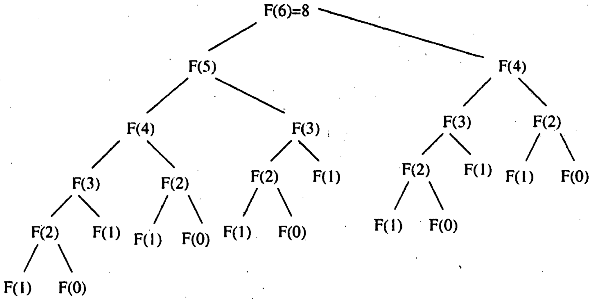
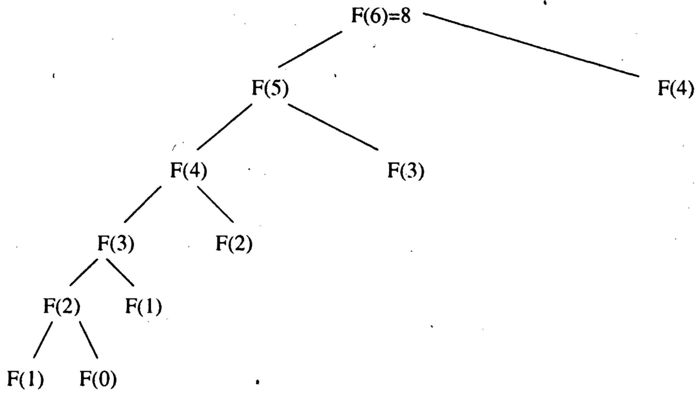
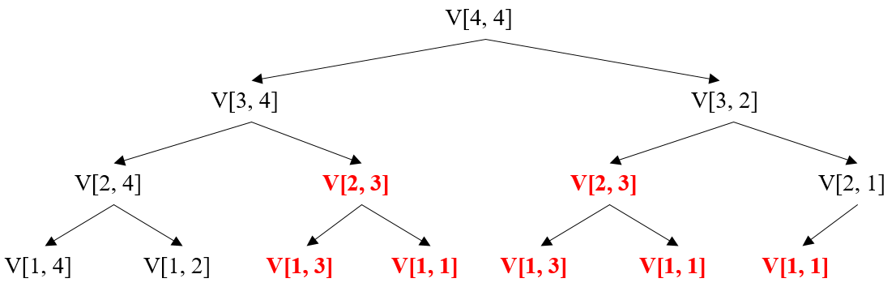
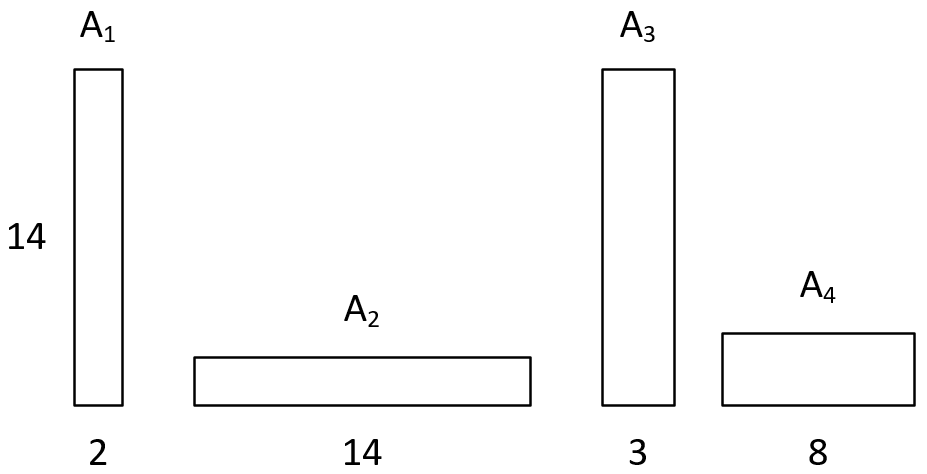
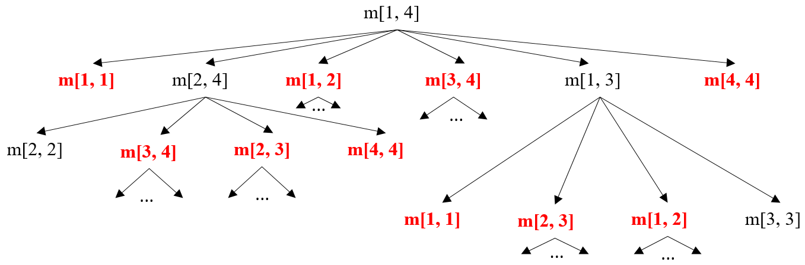
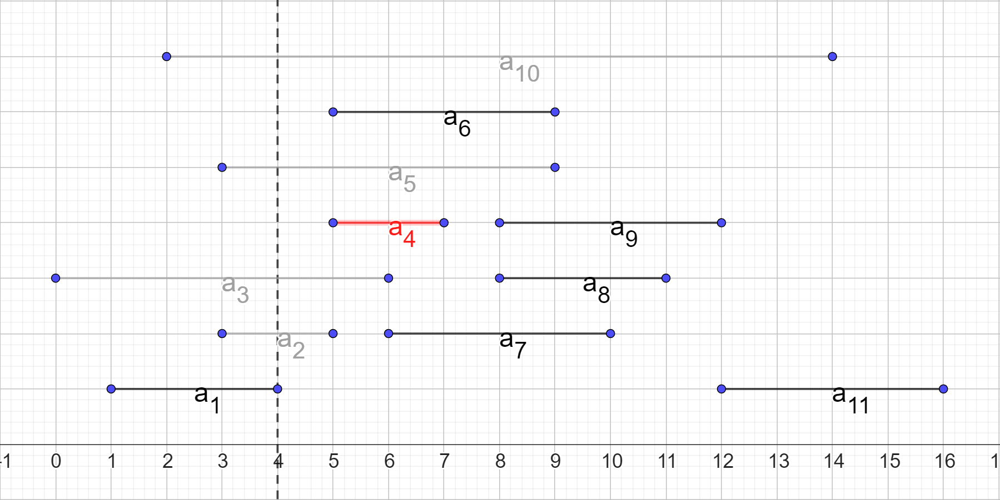
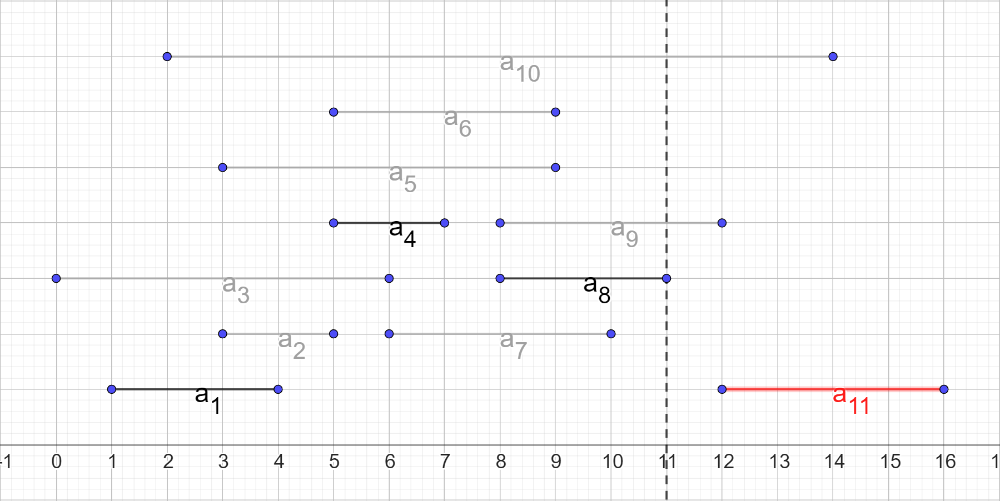
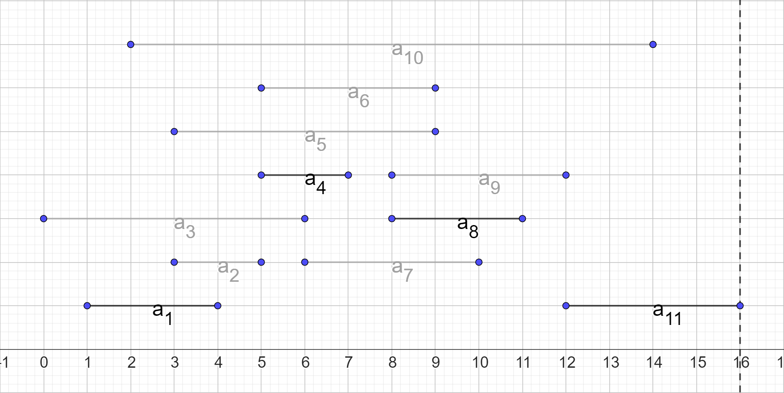

Алгоритмизация и Программирование
Морозов Владимир Игоревич
Динамическое програмиирование и жадные алгоритмы
Числа Фибоначчи
- Числа Фибоначчи – последовательность, которая рекурсивно задаётся следующей формулой: $$F_1 = 1\\F_2 = 1\\F_i = F_{i - 1} + F_{i - 2}$$
- На следующем слайде представлен код, вычисляющий $n$-ное число Фибоначчи напрямую по формуле
Код простейшей программы
def fib(n):
if n == 0:
return 0
elif n == 1:
return 1
return fib_simple(n - 1) + fib_simple(n - 2)
Построим дерево рекурсии для данной функции с $n = 6$
Дерево рекурсии

Неэффективность алгоритма
- По дереву рекурсии можно видеть, что такой алгоритм вычисления чисел Фибоначчи крайне неэффективен ($O(2^N)$)
- Основная причина неэффективности данного алгоритма заключается в том, что одни и те же подзадачи решаются множество раз, например, $F(0)$ вычисляется $5$ раз
Улучшение алгоритма
- Чтобы несколько раз не решать одни и те же задачи, заведём таблицу, в которую будем записывать решения каждой из задач
- Тогда, если решение уже есть в таблице, оно не будет вычисляться снова
Код простейшей программы
def fib_memoized(n, table={0: 0, 1: 1}):
if n not in table:
table[n] = fib_memoized(n - 1, table) +
fib_memoized(n - 2, table)
return table[n]
Построим дерево рекурсии для данной функции с $n = 6$
Дерево рекурсии

Анализ дерева
- Как видно, алгоритм стал работать гораздо более эффективно (за $O(N)$)
- Запоминание решений подзадач, которые понадобятся в дальнейшем, называется мемоизация (memoization)
Восходящий и нисходящий подходы
- В представленном улучшении алгоритма мы воспользовались нисходящим подходом – начали решение с большой задачи и "спускались" к более мелким подзадачам
- При применении с мемоизацией такой подход достаточно эффективен, однако это не предел
- Если решать задачи от меньшей к большей, можно вообще избавиться от рекурсии. Это восходящий поход.
Код с восходящим подходом
def fib_bottom_up(n):
table = [0, 1]
if n < 2:
return table[n]
for i in range(2, n + 1):
table.append(table[i - 1] + table[i - 2])
return table[-1]
Преимущества восходящего подхода
- Восходящий подход не переводит алгоритм в новый класс сложности, задача всё так же решается за $O(N)$
- Однако теперь производится меньше затрат на рекурсивные вызовы, что позволяет понизить константный множитель
- Задачу поиска числа Фибоначчи можно решить ещё более эффективным итерационным алгоритмом без излишних затрат памяти, но это решение за рамками данной лекции
Подходящие задачи
- Чтобы решать задачи методом динамического программирования, нужно уметь отличать те из них, для которых данный метод подходит
- На примере вычисления факториала мы уже увидели одну отличительную черту таких задач, а именно – перекрывающиеся подзадачи
- Это такие подзадачи, решение которых требуется несколько раз для решения более объёмных задач
Подходящие задачи
- Чтобы описать второе ключевое свойство задач, решаемых с помощью динамического программирования, необходимо ввести некоторые определения
- Как правило, динамические алгоритмы применяются в задачах оптимизации – таких задачах, где есть множество решений, и необходимо выбрать наиболее эффективное из них – оптимальное решение
- Чтобы ввести свойство, сначала приведём пример
Дискретная задача о рюкзаке
Дискретная задача о рюкзаке ($0$-$1$ knapsack problem) формулируется следующим образом:
- Во время ограбления магазина вор обнаружил $n$ предметов
- $i$-ый предмет стоит $v_i$ и весит $w_i$
- У вора есть рюкзак грузоподъёмностью $W$
- $v_i, w_i, W \in \N$
- Как набрать предметы на наибольшую суммарную стоимость?
Построение решения
- Чтобы решить эту задачу, нужно для каждого предмета принять решение, добавлять ли его в рюкзак (этим обосновано "$0$-$1$" в англоязычном названии)
- Чтобы для $i$ предметов и ёмкости $j$ принять такое решение, нужно проверить, что даст большую стоимость и при этом поместится в рюкзак: лучшая комбинация предметов, включающая $i$-ый предмет, или лучшая комбинация без этого предмета
Оптимальная подструктура
- В формулировании решения можно заметить важный момент: чтобы найти лучшую комбинацию для $i$ предметов и вместимости $j$, нам нужно найти лучшие комбинации для
$i' < i$ и $j' < j$ - То есть оптимальное решение задачи включает оптимальные решения подзадач
- В таком случае говорят, что задача образует оптимальную подструктуру
- Это второе свойство задач на динамическое программирование
Построение решения
- Продолжим задачу о рюкзаке
- Пусть $V[i, j]$ – максимальная стоимость подмножества из $i$ предметов для вместимости $j$
- Чтобы её получить, нам нужно, во-первых, получить максимальную стоимость подмножества без $i$-ого предмета – это $i - 1$ предметов при той же вместимости:
$V[i - 1, j]$
Построение решения
- Во-вторых, нам нужно получить максимальную стоимость подмножества, обязательно включающего $i$-ый предмет
- Стоимость такого подмножества равна стоимости самого $i$-ого предмета в сумме с максимальной стоимостью подмножества без
$i$-ого предмета при вместимости $j - w_i$:
$v_i + V[i - 1, j - w_i]$
Построение решения
- Таким образом, получим следующее выражение для максимальной стоимости подмножества из $i$ предметов при вместимости $j$:$$V[i, j] = max(V[i - 1, j], v_i + V[i - 1, j - w_i])$$
- Однако, если $i$-ый предмет не вмещается в рюкзак (т.е. $j - w_i < 0$), в качестве решения берётся максимальная стоимость для предметов без $i$-ого
Построение решения
$$ \begin{equation*} V[i, j] = \begin{cases} V[i - 1, j], если\ j - w_i < 0,\\ max(V[i - 1, j], v_i + V[i - 1, j - w_i]). \end{cases} \end{equation*} $$
Пример задачи
В качестве примера возьмём маленький экземпляр задачи о рюкзаке со следующими параметрами: $W = 4$
| $i$ | $1$ | $2$ | $3$ | $4$ |
|---|---|---|---|---|
| $v_i$ | $2$ | $2$ | $4$ | $4$ |
| $w_i$ | $1$ | $2$ | $1$ | $2$ |
Рекурсивное решение

Рекурсивное решение
- Как видно из рисунка, в рекурсивном решении встречаются перекрывающиеся подзадачи, что значительно замедляет вычисление
- Несмотря на то, что в некоторых маленьких экземплярах данной задачи, такие подзадачи могут практически отсутствовать, с увеличением объёма задачи их количество значительно возрастает
Улучшенное решение
- В целях улучшения производительности можно построить решение, используя таблицу размером $n \times W$ и постепенно заполняя её. Его сложность – $O(nW)$.
- Построим такую таблицу для задачи из предыдущего примера
Таблица динамического программирования
| $i \backslash j$ | $0$ | $1$ | $2$ | $3$ | $4$ |
|---|---|---|---|---|---|
| $0$ | $0$ | $0$ | $0$ | $0$ | $0$ |
| $1$ | $0$ | $2$ | $2$ | $2$ | $2$ |
| $2$ | $0$ | $2$ | $2$ | $4$ | $4$ |
| $3$ | $0$ | $4$ | $6$ | $6$ | $8$ |
| $4$ | $0$ | $4$ | $6$ | $8$ | $10$ |
Анализ таблицы
- Как видно из таблицы, решения некоторых подзадач (выделены красным) не требуются для решения основной задачи
- Поэтому в данном случае целесообразно применить нисходящий подход, в котором решаются только нужные подзадачи
- В качестве базовых случаев рекурсии можно взять ситуации, когда $i$ или $j$ равны $0$, результатом такого вызова должен быть $0$
Перемножение цепочки матриц
Пусть есть цепочка матриц $A_1..A_N$, например:

Перемножение цепочки матриц
- Пусть для данной цепочки матриц необходимо найти их произведение
- Посчитаем, сколько скалярных умножений (т.е. перемножений обычных чисел) для этого понадобится
- Количество скалярных умножений, необходимое, чтобы перемножить матрицы размерами $p \times q$ и $q \times r$ равно $pqr$
Перемножение по порядку
- Для умножения $A_1$ на $A_2$ понадобится $14 \times 2 \times 14 = 392$ умножения
- В результате получится матрица $A_{12}$ размером $14 \times 14$
- Далее умножим $A_{12}$ на $A_3$ за $14 \times 14 \times 3 = 588$ скалярных умножений
- Получим $A_{123}$ размером $14 \times 3$
Перемножение по порядку
- Осталось умножить $A_{123}$ на $A_4$
- Потратим на это $14 \times 3 \times 8 = 336$ скалярных умножений
- Итого получим $A_{1234}$ размером $14 \times 8$, выполнив $1316$ умножений
- Такой порядок перемножений соответствует следующей расстановке скобок: $$((A_1 \times A_2) \times A_3) \times A_4$$
Оптимизированное перемножение
- Теперь попробуем изменить порядок перемножения
- Сначала перемножим $A_2$ и $A_3$ за $2 \times 14 \times 3 = 84$ умножения и получим $A_{23}$ размером $2 \times 3$
- Далее умножим $A_23$ на $A_4$ за $2 \times 3 \times 8 = 48$ умножений и получим $A_{234}$ размером $2 \times 8$
Оптимизированное перемножение
- Наконец, перемножим $A_1$ и $A_{234}$ за $14 \times 2 \times 8 = 224$ умножения и получим итоговую матрицу $A_{1234}$ размером $14 \times 8$
- Благодаря ассоциативности умножения, мы получили верный результат, но теперь всего за $356$ умножений
- Такой порядок перемножений соответствует следующей расстановке скобок: $$A_1 \times ((A_2 \times A_3) \times A_4)$$
Вывод
- Таким образом, можно заключить, что порядок перемножения цепочки матриц может значительно повлиять на эффективность такого перемножения
- Однако необходимо отметить, что для длинных цепочек порядок не будет очевидным
- Поиск такого порядка перемножений матриц, при котором минимизируется количество скалярных умножений, является задачей оптимизации
Метод грубой силы
- Количество всевозможных расстановок скобок в выражении определяется последовательностью чисел Каталана: $1, 1, 2, 5, 14, 42, 132, ...$
- Приближённо значения элементов этой последовательности можно найти по формуле: $C_n = \frac{4^n}{n^{3/2}\sqrt{\pi}}$, что говорит об экспоненциальной сложности полного перебора
Формулировка задачи
- Пусть дан ряд попарно перемножимых матриц $A_1..A_N$
- Пусть число $p_0 \in \N$ задаёт количество строк в матрице $A_1$, а числа $p_i, i = \overline{1, N}$ — количества столбцов в $i$-ой матрице
- Определим стоимость оптимального перемножения матриц от $i$-ой до $j$-ой как $m[i, j]$
Определение оптимальной подструктуры
- Представим, что мы знаем оптимальную расстановку скобок для заданного набора матриц
- Такая расстановка обязательно разобьёт все матрицы на две подпоследовательности $A_{1..k}$ и $A_{k + 1..n}$
- При этом, если расстановка скобок во всём наборе оптимальна, то и для подпоследовательностей она будет оптимальна
Рекурсивное определение
- Мы определили, что оптимальное решение общей задачи включает оптимальные решения подзадач
- Теперь можем записать выражение для $m[i, j]$ $$m[i, j] = m[i, k] + m[k + 1, j] + p_{i - 1}p_kp_j$$
- Однако в полученном выражении есть важное неизвестное — позиция $k$, определяющая оптимальную расстановку скобок
Рекурсивное определение
- Чтобы найти оптимальное значение $k$ для каждой пары $i, j$ необходимо просто перебрать все возможные варианты и выбрать лучший
- В качестве базового случая рекурсии следует взять случай, когда $i = j$ и, очевидно, $m[i, j] = m[i, i] = 0$
- Запишем полное рекурсивное выражение
Рекурсивное определение
$$ \begin{equation*} m[i, j] = \begin{cases} 0, \text{при}\ i = j\\ \underset{i \leqslant k < j}{min}(m[i, k] + m[k + 1, j] + p_{i-1}p_kp_j) \end{cases} \end{equation*} $$Дерево рекурсии
Построим дерево рекурсии для рассмотренного примера

Дерево рекурсии
- В данном случае дерево рекурсии настолько велико, что на рисунке представлена только его часть
- К тому же, дерево явно насыщено перекрывающимися подзадачами (выделены красным)
- Очевидно, такой алгоритм имеет экспоненциальную сложность
Восходящий подход
- Чтобы воспользоваться методом динамического программирования, построим таблицу
- Каждая строка будет соответствовать значению $i$, столбец — значению $j$
- Таблицу следует заполнять по диагоналям вверх, начиная от главной
Таблица динамического программирования
| $i \backslash j$ | $1$ | $2$ | $3$ | $4$ |
|---|---|---|---|---|
| $1$ | $0$ | $392$ | $168$ | $356$ |
| $2$ | $-$ | $0$ | $84$ | $132$ |
| $3$ | $-$ | $-$ | $0$ | $336$ |
| $4$ | $-$ | $-$ | $-$ | $0$ |
Анализ решения
- Из размера таблицы очевидно, что сложность такого подхода составит $O(N^2)$
- Однако здесь следует отметить, что мы нашли только стоимость оптимального решения, но не само решение
- Для поиска расстановки скобок, дающей оптимальную стоимость, следует фиксировать оптимальные значения $k$, что никак не ухудшит сложность алгоритма
Задача о выборе процессов
Сформулируем ещё одну задачу:
- Пусть есть однопроцессорный компьютер
- Также есть множество процессов $S = \{a_1, a_2, ..., a_N\}$, готовых для выполнения
- $i$-ый процесс должен работать в течение интервала времени $[s_i, f_i)$
- Задача: выбрать максимальное подмножество непересекающихся по времени процессов
Пример
Рассмотрим пример входных данных для задачи, состоящий из $11$ процессов, отсортированных по времени завершения
| $i$ | $1$ | $2$ | $3$ | $4$ | $5$ | $6$ | $7$ | $8$ | $9$ | $10$ | $11$ |
|---|---|---|---|---|---|---|---|---|---|---|---|
| $s_i$ | $1$ | $3$ | $0$ | $5$ | $3$ | $5$ | $6$ | $8$ | $8$ | $2$ | $12$ |
| $f_i$ | $4$ | $5$ | $6$ | $7$ | $9$ | $9$ | $10$ | $11$ | $12$ | $14$ | $16$ |
Задача о выборе процессов

Задача о выборе процессов
Покажем, что задача образует оптимальную подструктуру:
- Пусть $S_{ij}$ – подмножество процессов, работающих между $i$-ым и $j$-ым процессом, $A_{ij}$ – оптимальное (максимального размера) подмножество таких процессов
- Пусть $A_{ij}$ содержит некоторый процесс $a_k$
- Тогда $A_{ij} = A_{ik} \cup \{a_k\} \cup A_{kj}$ (можно доказать от противного, см. [1])
Оптимальная подструктура
- То есть, выбрав процесс $a_k$, нам нужно рекурсивно искать оптимальные подмножества среди процессов, запускающихся после завершения $a_k$ и среди процессов, завершающихся до запуска $a_k$ (см. рисунок на след слайде)
- Вопрос состоит в том, как выбрать $a_k$
- Очевидно, $a_k$ нужно выбирать так, чтобы максимизировать количество процессов в $A_{ij}$
Шаг решения

Описание рисунка
На рисунке:
- Красным выделен процесс $a_k$ ($k = 4$)
- Серым выделены процессы, не входящие в подмножества $A_{ik}$ и $A_{kj}$, т.к. они пересекаются с $a_k$
- Пунктирными линиями показаны границы процесса $a_k$
Рекурсивная формула
- Запишем формулу для получения наибольшего количества процессов
- Обозначим за $c[i, j]$ размер оптимального подмножества для процессов между $i$-ым и $j$-ым
- Тогда: $$ \begin{equation*} c[i, j] = \begin{cases} \underset{a_k \in S_{ij}}{max}\{c[i, k] + c[k, j] + 1\},&S_{ij} \neq \emptyset,\\ 0, &S_{ij} = \emptyset. \end{cases} \end{equation*} $$
Оптимальная подструктура
- Как видно, оптимальное решение для большой задачи снова включает оптимальные решения для подзадач
- Также можно показать, что в данном алгоритме присутствуют пересекающиеся подзадачи
- Таким образом, эту задачу можно решать с помощью динамического программирования, запоминая решения для всех $c[i, j]$
Жадный выбор
- Обратим внимание на важный момент: в двух рассмотренных задачах в целях оптимизации мы делали из ряда оптимальных решений, получая их посредство рекурсивного решения меньших подзадач
- Такой подход довольно успешен, но иногда можно сделать решение более эффективным посредством жадного выбора
- Жадный выбор – такой выбор подзадачи, который представляется оптимальным до её непосредственного решения
Жадный выбор
- Можно применить жадный выбор в данной задаче
- Тогда, вместо перебора всех $a_k$ в поисках оптимальной комбинации подзадач, будем всегда брать процесс, заканчивающийся раньше остальных
- Если изначально мы отсортировали процессы по времени окончания, такой выбор оставит всего одну подзадачу вместо двух
Жадный выбор
- В [1] доказано, что такой жадный выбор приводит к оптимальному решению
- Алгоритмы, осуществляющие жадный выбор вместо перебора всех вариантов, называются жадными алгоритмами
- Задачи, решаемые жадными алгоритмами, так же должны представлять оптимальную подструктуру, однако всегда необходимо доказывать, что жадный выбор действительно ведёт к оптимальному решению
Демонстрация работы
- Покажем, что жадный выбор работает для задачи о выборе процессов
- На каждом шаге будем присоединять к решению процесс с наименьшим временем завершения
- На рисунках красным выделен присоединяемый на данном шаге процесс, пунктиром – время окончания последнего процесса в оптимальном подмножестве
Шаг 1

Шаг 2

Шаг 3

Шаг 4

Результат

Демонстрация работы
- На последнем рисунке показан результат работы жадного алгоритма: оптимальное подмножество из 4 процессов
- Путём полного перебора можно увидеть, что это действителньо оптимальное решение (но есть ещё одно равносильное)
- Данный жадный алгоритм работает за $O(N)$ в случае, если процессы отсортированы по времени завершения
- Предыдущее решение этой задачи с мемоизацией работало за $O(N^2)$
Континуальная задача о рюкзаке
- Континуальная (непрерывная) задача о рюкзаке формируется так же, как дискретная, за тем лишь исключением, что вор может взять не весь предмет целиком, а любую его часть
- Для дискретной задачи удобно представлять, что вор крадёт штучные товары, например, слитки драгоценных металлов
- Для континуальной задачи более удобным представлением будет кража, к примеру, жидких химических соединений или песка драгоценных металлов
Континуальная задача о рюкзаке
- В отличие от дискретной задачи, жадный выбор в континуальной задаче о рюкзаке приводит к оптимальному решению
- Выбор состоит в том, чтобы набирать максимальное количество товара с наибольшей стоимостью на единицу веса
- Если такой товар закончился, а рюкзак не заполнен, можно переходить к второму по удельной стоимости товару и т.д.
Полезные источники
- Томас Х. Кормен, Чарльз И. Лейзерсон, Рональд Л. Ривест, Клиффорд Штайн. Алгоритмы: построение и анализ, 3-е издание. Главы 15, 16 – Основная книга нашего курса.
- А.Левитин. Алгоритмы: введение в разработку и анализ. Главы 8 и 9. Более подробно рассмотрена задача о рюкзаке.
- А. Скиена. Алгоритмы: руководство по разработке. Глава 8 – Наиболее краткое и простое изложение материала
Полезные источники
- Задача о рюкзаке очень простыми словами
- Ещё про задачу о рюкзаке от академии Яндекса
Материалы на английском
- Визуализация большого количества алгоритмов с кодом на JS
- Введение в динамическое программирование